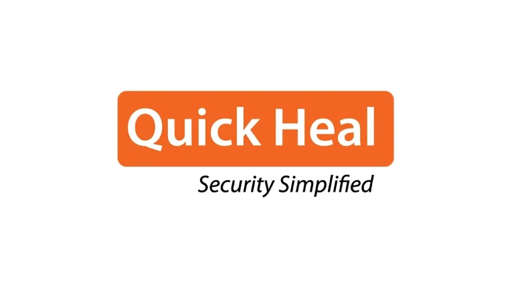

Quick Heal Off Campus Drive 2022 | Software Engineer
Quick Heal Off Campus Drive 2022 | Software Engineer | Latest Job Update
Quick Heal Job Opportunity is hiring for the post of Software Engineer. A student from various disciplines can apply for the Quick Heal off-campus recruitment drive 2022. Interested and eligible candidates can read more details below

| Quick Heal Recruitment 2022 | |||
|---|---|---|---|
| 1 | Company name | Quick Heal | |
| 2 | Post Name | Software Engineer | |
| 3 | Salary | ₹ 8.5 LPA | |
| 4 | Experience | 0-1 yr | |
| 5 | Job Location | Pune | |
| 6 | Batch | 2022/21/20/19/18/17 | |
Job Description:
▪︎ Quick Heal is hiring candidates for the post of Software Engineer..
Job Responsibilities:
▪︎ He would be able to fix coding level bugs.
▪︎ [Requires – Good programming skills in any of the language (C/C++/Java/JavaScript), Basic data strcture knowledge(Arrays, Vectors, LinkLists)]
▪︎ Able to process and explore inputs given by mentors to dig down further details of the product features.
▪︎ Understands the product related discussion well enough in terms of architecture, design
▪︎ [Requires – Good understanding of Operating systems concepts like process, thread, synchrnoization, file handling, memory management (Linux or Windows or MAC) ]
▪︎ With few inputs should be able to do dev & testbed setups, write and execute tests, report bugs.
▪︎ Should be able to do simple bugfixes and small enhancements.[Requires – Good analytical, programming skill]
▪︎ Should ask relevant queries to peers/seniors related to product, technology, domain
▪︎ Should gain product and domain knowledge in the process. [Requires – Proactiveness, learning aspect, communication, behavior aspect]
Eligibility Criteria:
▪︎ Candidate must have Bachelor’s degree in engineering from any stream can apply
Preferred skill:
▪︎ Committed to quality, including security and performance.
▪︎ Strong interpersonal, communication, and presentation skills
▪︎ 0-1+ years experience in software product development preferably in networking or security domain
▪︎ Excellent C/C++/Java/Angular programming skills.
▪︎ Basic knowledge of networking or security domain.
▪︎ Basic understanding of OS concepts(Linux/Windows/MAC)
About Quick Heal
Quick Heal Technologies Limited is one of the leading providers of IT Security and Data Protection Solutions with a strong footprint in India and an evolving global presence. Incorporated in the year 1995, we are an all-round player in cybersecurity with presence in B2B, B2G and B2C segments across multiple product categories – endpoints, network, data, and mobility.
How to Apply for Quick Heal Recruitment 2022?
▪︎ Interested and Eligible candidates can apply for this drive online by scrolling down and clicking on Apply HERE.